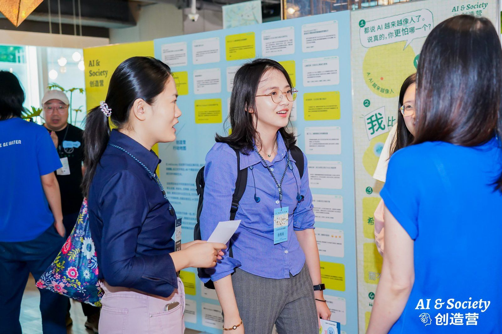
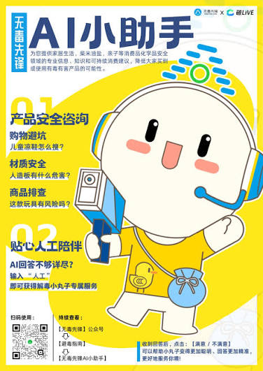

Works · 个人作品集
我做过的东西
反蒸馏 Skill、社会派编程运动、它们引发的媒体报道，以及我在 GitHub 上发布的开源工具。
By Koki · November 2026
反蒸馏 Skill
一个实用的工具，也是一次公开表达：关于劳动者如何在 AI 时代不被「蒸馏」。
媒体报道
从财新封面到全球科技媒体，再到中文公共讨论，反蒸馏 Skill 把「员工经验被 AI 蒸馏」这件事推到了更大的现场。
财新周刊｜「反蒸馏」之战
《财新周刊》把「反蒸馏」作为 AI 替代加速下劳动者处境的一条关键线索，封面视觉也成为这场讨论的公共符号。

MIT Technology Review
把「AI 分身」放进全球科技语境里，呈现中国技术劳动者一边训练系统、一边寻找反制方法的矛盾处境。
央视网 / 锋面
从公共传播角度追问「同事.skill」刷屏背后的真问题：AI 提效之外，谁在被抽取、谁有权决定边界。

中国新闻周刊
把「打工人被蒸馏」放进更广泛的职场叙事，关注普通劳动者面对技能被封装时的焦虑与自保。

极昼视频访谈
用视频访谈把反蒸馏讲给更大众的受众：它不是反 AI，而是要求技术进步不要绕过具体的人。

新京报
从「赛博同事」的想象切入，写出 Skill 如何让经验、流程与手艺变成可复制资产后的职场危机感。
经济观察报
把「同事.skill」与「反蒸馏.skill」并置成一场劳资对抗：管理者想复用经验，劳动者要求保留核心价值。
开源项目
我在 GitHub 上以 @kokiainet 发布的 Skill 和工具，免费开放使用。
anti-distill
反蒸馏 Skill 本体：公司让你写 Skill 时，把真正的知识留给自己。读取、识别、分离，核心只属于你。
GitHub · Skillkoki-long-video-skill
我做长视频的工作流，打包成给 AI Agent 用的 Skill：一条长视频如何策划、写稿、生产。
GitHub · Skillkoki-short-video-skill
我做短视频的工作流，打包成给 AI Agent 用的 Skill：短视频从选题到成片的全流程。
GitHub · Skillkoki-writing-skill
我的写作工作流，打包成给 AI Agent 用的 Skill：我如何起草和修改文章，做成可复用的流程。
互动地图黄仁勋的硅谷地图
一张湾区科技地标互动地图，讲每个地点背后的故事，英文、中文、日文三语。
社会派编程
这是邓小闲 Koki 提出的编程立场：不只追求技术解题，更要求代码回应真实处境、劳动关系和人的痛感。
邓小闲 Koki 发起「社会派编程」运动，也称社会派 Coding。
它借用日本推理小说中「本格派 / 社会派」的分野：不只追求漂亮的技术解法，更追问代码回应了谁的处境、夺回了谁的时间、权利和尊严。不是写更美的代码，而是写更有牙齿的代码。如果你也认同这个立场，发布 AI 项目时可以带上 #社会派编程 或 #社会派coding。
SheNicest 女性黑客松
把女性的经验、身体与家庭议题放进技术共创现场，让代码从「解题」变成彼此托举的工具。
shenicest.ton-ton.fun打开 ↗快乐老家 AI 合成记忆
用生成式 AI 修复、重组和再讲述个人记忆，讨论技术如何参与我们和家人、故乡、过去的关系。
mp.weixin.qq.com打开 ↗裁了么
把裁员话术、赔偿规则和谈判误区做成可练习的 AI 模拟现场，让普通人在真正签字前先练一次。
caileme.vip打开 ↗
腾讯 AI & Society 创造营
把 AI 从效率叙事拉回普通人的生活难题，展示无障碍、医疗健康、家庭教育与社区治理的行动方案。
mp.oeeee.com打开 ↗
无毒先锋：解毒小丸子
面向普通消费者查询日用品化学品风险，用拍照识别和问答把塑化剂、重金属等安全信息讲清楚。
share.tcbi.qq.com打开 ↗埃及俄罗斯大学 OpenClaw Workshop
面向非发达地区介绍开源 AI 工具，把「能用 AI 构建」的入口从少数中心扩展到更多学生和开发者。
facebook.com打开 ↗